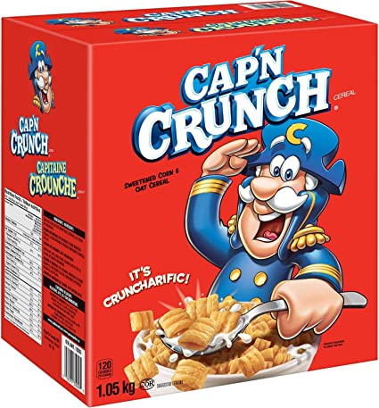
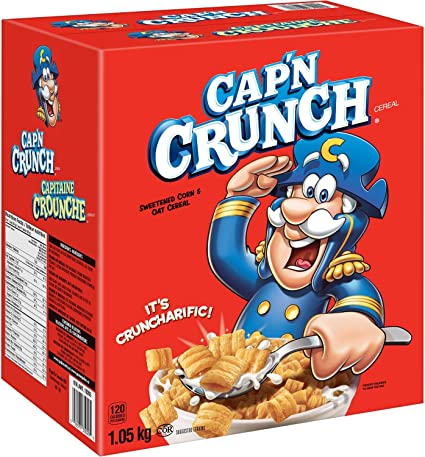

John Draper recebeu seu apelido por usar o apito de brinde do cereal Cap'n Crunch para fazer ligações gratuitas nos EUA na década de 1970.



John Draper recebeu seu apelido por usar o apito de brinde do cereal Cap'n Crunch para fazer ligações gratuitas nos EUA na década de 1970.

John Thomas Draper, mais conhecido pelo seu apelido de “Captain Crunch”, é um dos primeiros hackers da história sendo conhecido por ser um phreaker (phone + freak), um tipo de cracker que consegue fazer o uso indevido de linhas telefônicas. Ele revolucionou o mundo da tecnologia e obrigou muitas empresas de telefonia a atualizarem seus sistemas e aparelhos.
Nascido em 1943, ele começou a se interessar em tecnologia muito jovem ao sempre passar seu tempo livre desmontando aparelhos eletrônicos para descobrir como eles funcionavam. De acordo com Draper, ele se interessou por sistemas telefônicos após encontrar um aparelho de telefone em um lixão e levá-lo para casa para conserta-lo. Desde então, ficou fascinado pelo aparelho e suas funcionalidades.
Trabalho Interdisciplinar do Curso Técnico de Desenvolvimento de Sistemas I
Jhamil Cristian – RM: 23093 -  Cristiandiv
Cristiandiv
Marina Ribeiro Coral – RM: 23182 - MarinaCoral
Rômulo Ornelas de Oliveira Junior – RM: 23133 - Parrylt
Vinicius Gonçalves - RM: 23148 - ViniciusParanhos
Anselmo Paulo Florentino - Programação e Algoritmo /
Operação de Software Aplicativo
Israel Nuncio Dias Lucania - Design Digital
Rodrigo Vieira Campos - Programação Web I